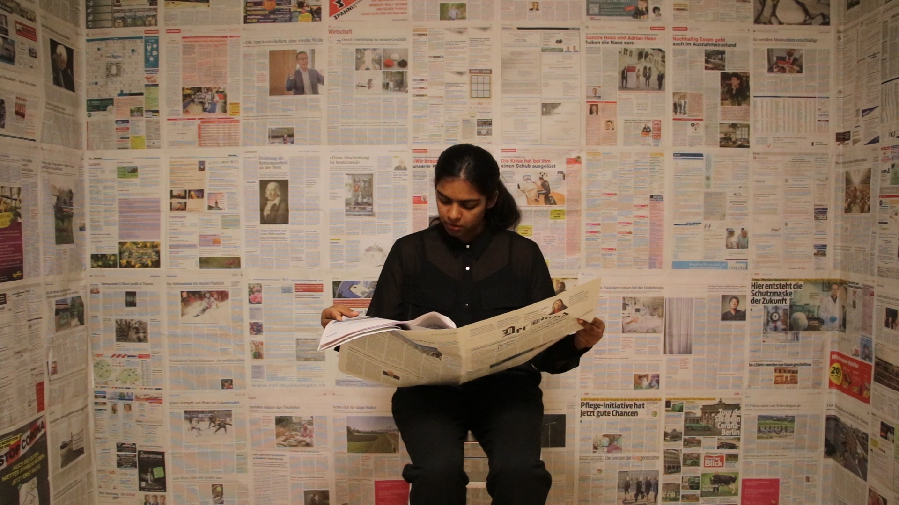
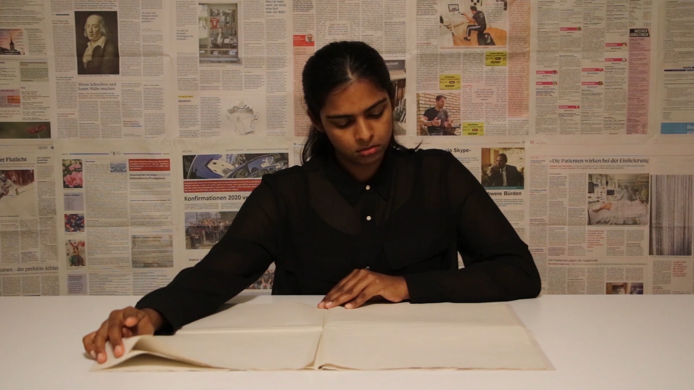
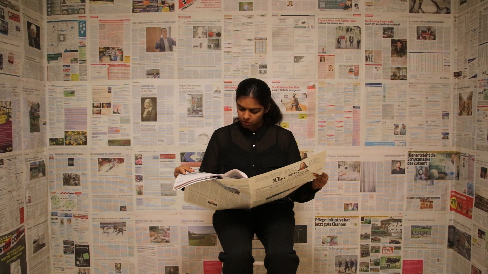
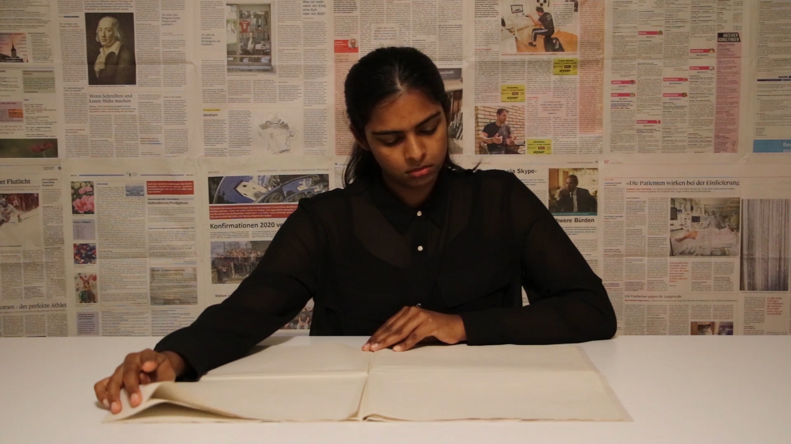

Ich bin unsicher im Deutsch und Sachen wiederzugeben gehört nicht zu meiner Stärke. Manchmal hänge ich an einem Satz fest, weil ich den Sinn dahinter nicht bildllich vorstellen kann. Dann denke ich an die Tragödie von Johann Wolfgang von Goethe, die ich gelesen habe und bin noch mehr verwirrt.
Sind die ersten Hindernisse weg, kann ich mich frei bewegen und kreativ sein. EXPERIMENTIEREN! Darf ich behaupten, dass ich gerne male, obwohl ich in meinem Leben noch nie Farben gekauft habe? Ist das auch ein Hinterniss oder eher "I`m just antrieblos ohne Ambition am Träumen?"
Eine geordnete Liste
 


